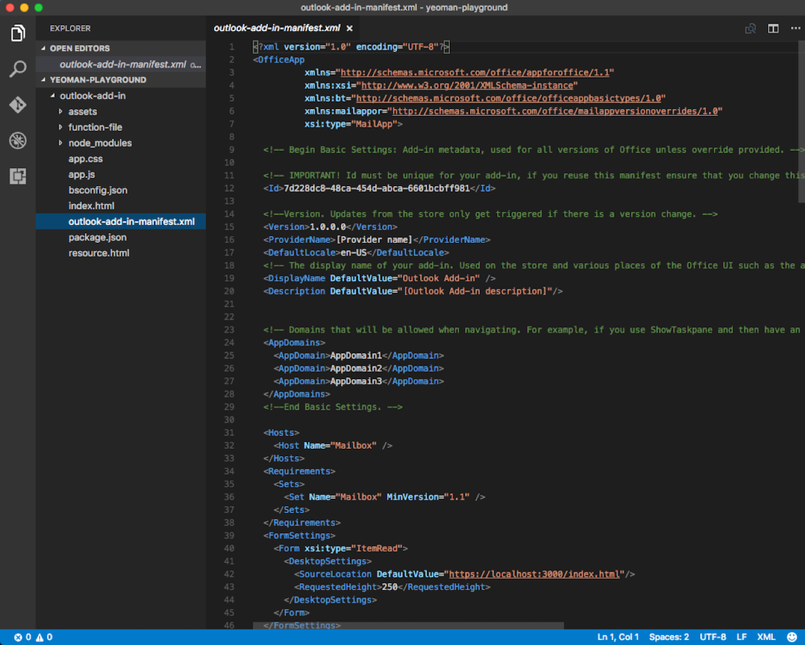
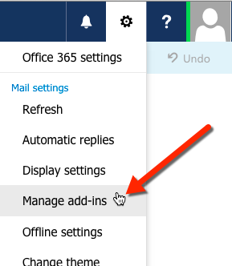
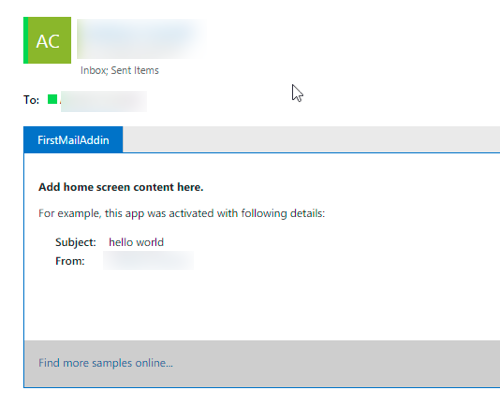
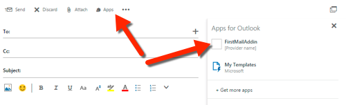
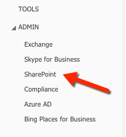

Office Add-ins with Visual Studio Code
Office Add-ins run inside an Office application and can interact with contents of the Office document using the rich JavaScript API.

Under the hood, an Office Add-in is just a web app that you can host anywhere. Using a manifest.xml file, you tell the Office application where your web app is located and how you want it to appear. The Office application takes care of hosting it within Office.
Create a new Office Add-in project
First follow the instructions to Create an Office Add-in using any editor to install the necessary prerequisites, and use the Yeoman generator yo office to create a new add-in project.
The following table lists the project attributes to select in the Yeoman generator.
| Option | Value |
|---|---|
| New subfolder | (Accept the default) |
| Add-in name | Outlook Add-in |
| Supported Office application | (Select Outlook) |
| Create new add-in | Yes, I want a new add-in |
| Add TypeScript | No |
| Choose framework | Jquery |
Use Visual Studio Code to develop your Office Add-in
Visual Studio Code is a great tool to help you develop your custom Office Add-ins for Outlook, Word, Excel, PowerPoint, regardless of whether the Add-ins run in web clients, Windows clients, iOS clients or on macOS!
Getting started
Open the project in Visual Studio Code by entering the following text on the command line from within the same folder where you ran the generator:
code .

Open the manifest.xml file that was created by Yo Office and locate the SourceLocation node. Update the URL of the DefaultValue to the URL where you will host the Add-in.
Tip: If you are using an Azure Web App as the host, the URL will look like
https://[name-of-your-web-app].azurewebsites.net/[path-to-add-in]. If you are using the self-hosted option listed above, it will behttp://localhost:3000/[path-to-add-in].
Debugging your Office Add-in
VS Code does not currently support client-side debugging. To debug your client-side Add-in, you can use the Office web clients and open the browser's developer tools and debug the Add-in just like any other client-side JavaScript application.
If you are using Node.js or ASP.NET Core for server-side logic that supports your Office Add-in, refer to the Debugging page to configure VS Code for debugging either of these runtimes.
Install the Add-in
Office Add-ins must be installed, or registered, with the Office application in order to load. This is done using the manifest.xml file you modified earlier.
Side loading Mail Add-ins
Mail Add-ins can be installed within the Outlook Web App. Browse to your Outlook Web App and login. Once logged in, select the gear icon in the top-right section and select Manage add-ins:

On the Manage add-ins page, select the + icon, and then select Add from a file.

Locate the manifest.xml file for your custom Add-in and install it, accepting all prompts when installing it.
Once that's done, select an existing email and you will see a horizontal bar below the email header that includes the Add-in:

Next try creating an email, select the Add-ins or Apps menu item to get the Task Pane to appear:

Select the Add-in and see it appear in the Task Pane:

Deploying Add-ins to the Office 365 Tenancy's App Catalog
All Office Add-ins (including Mail Add-ins) can be installed from your Office 365 tenancy's App Catalog site. Log in to your Office 365 portal. In the left-hand navigation, towards the bottom, select the Admin / SharePoint option:

From the SharePoint Admin Center, select the Apps option in the left-hand menu and then select the App Catalog. On the App Catalog page, select the Apps for Office option and upload the manifest.xml file.

Install Content & Task Pane Add-ins in Word / Excel / PowerPoint
Depending on the type of Add-in you created, you can add it to one of the Office applications. Task Pane and Content Add-ins can be installed in Word, Excel & PowerPoint. Mail Add-ins can be installed in Outlook.
To install an Add-in within an Office application, select the Insert tab and click the Office Add-ins button, as shown here using the Excel Web App:

You can select Add-ins you've uploaded to your Office 365 tenancy's App Catalog using the Office Add-ins dialog (listed under My Organization) or acquire Add-ins from the Office Store.
Next steps
Check out the other pages on the VS Code site to find out how you can use more capabilities of the editor when creating custom Office Add-ins:
- Language Overview - You can write Office Add-ins in many languages. Find out what VS Code has to offer.
- User Interface - Just starting out with VS Code? This is worth reviewing.
- Basic Editing - Learn about the powerful VS Code editor.
Common questions
Can I create an Office Add-in with the generator and use VS Code regardless of the language or client-side framework?
Yes, you can. You can use pure HTML, Angular, Ember, React, Aurelia... anything you like!
Can I use TypeScript to create my Office Add-in?
Absolutely, VS Code has great support for TypeScript!